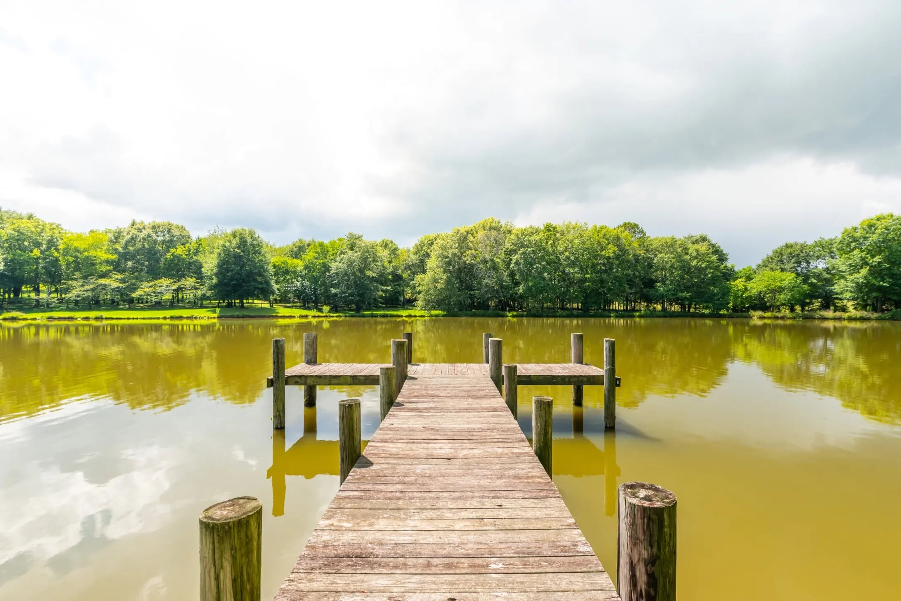
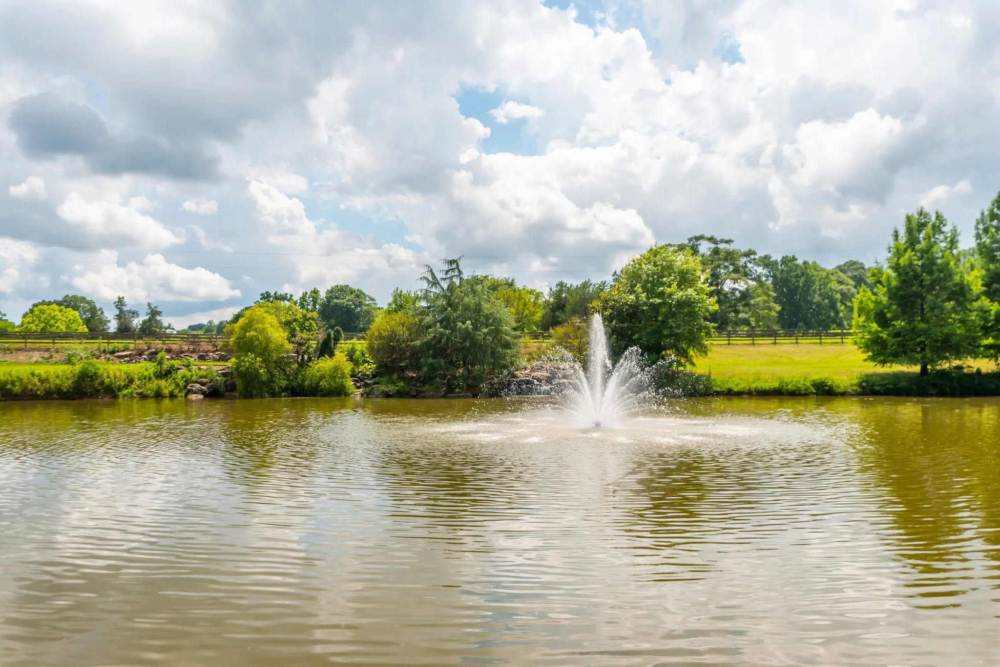
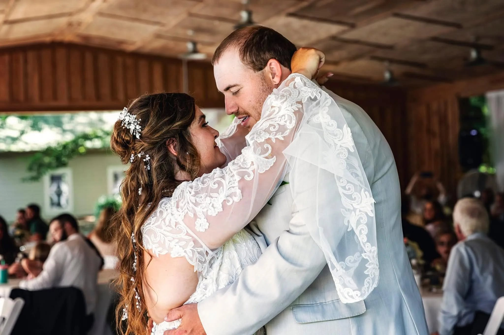
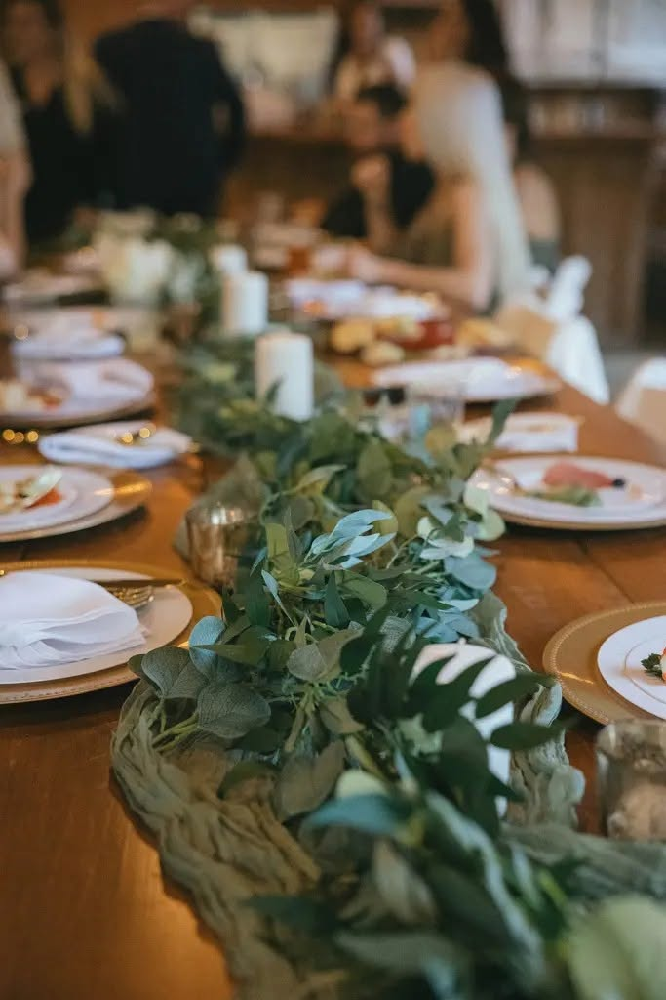
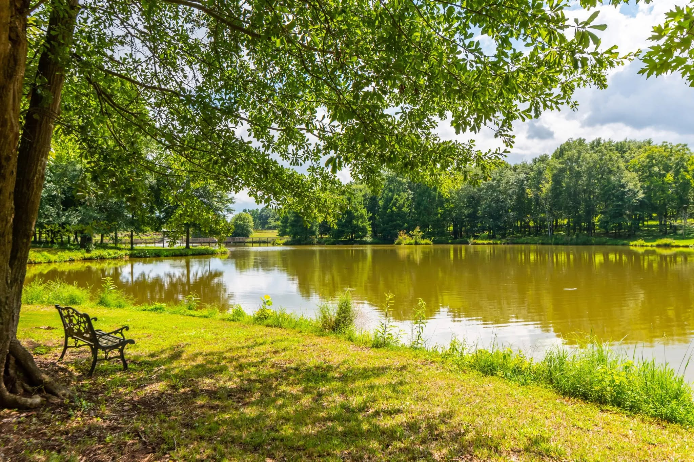
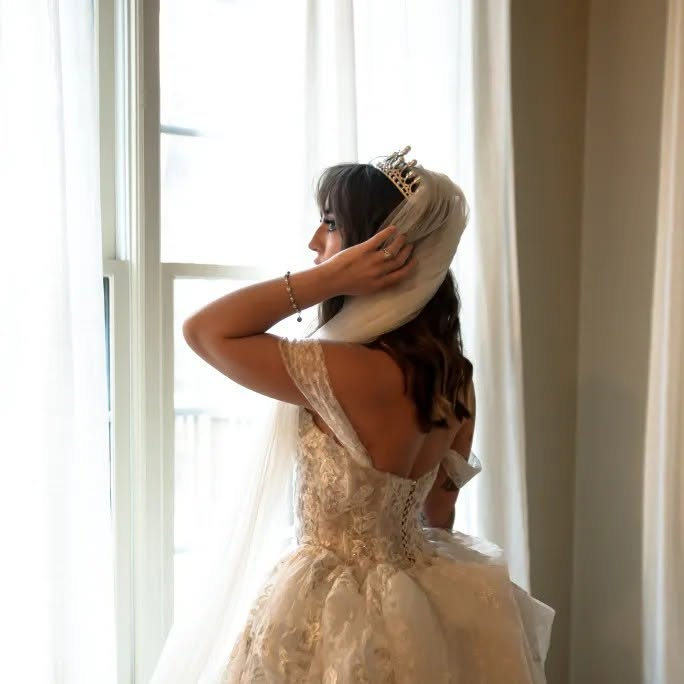

The Ceremony Bridge
A lantern-lined footbridge to a lighted gazebo on the water — vows at golden hour, fountain glowing behind you.
Calhoun, Georgia · An Hour from Atlanta
Weddings & celebrations, held quietly by the water.
The Venue
On Walden Pond is a family-run wedding and event venue on the quiet edge of Calhoun, Georgia — pines, still water, and a lighted bridge over the pond, kept simple so your day can be the focus.
We host the whole arc of a celebration: ceremonies on the bridge, portraits on the dock, long dinners under the oaks, and an evening that ends around the fire. We take the time to know the families we work with, because a celebration should feel like it belongs to you.

The Space
A lantern-lined footbridge to a lighted gazebo on the water — vows at golden hour, fountain glowing behind you.

Weathered docks and open water for the portraits everyone actually keeps — and a quiet bank for an intimate ceremony.

A stone fire pit and benches under old oaks beside the cabin — where the evening winds down.
Gallery








The Promise of One
No second ceremony on the lawn, no other crowd at the dock, no fighting for the sunset. When your date is booked, the pond, the bridge, the oaks and the fire pit belong to your gathering alone — and the family who owns them is on hand to run the day.
Bookings & Tours
Call or write and tell us your date and the shape of your day — we'll answer within two business days. Not a full event but engagement portraits or a by-the-fountain elopement? We open the grounds for photo sessions by the hour; ask.
On Walden Pond · 565 Owens Gin Road NE, Calhoun, GA 30701